Don`t
worry, Be Happy !
Don`t
worry, Be Happy !|
Don`t
worry, Be Happy ! |
|
НАША МАША
17-18.11.2007
А вот американский ветер у нас дует от Марины, и этим ветром на Мамай занесло двух симпатишных девушек из США - Лиза Солтет (Elisa Soltet) и Элизабет Крюгер (Elisabeth Kruger). Девушки хорошо говорят по-русски и отлично чувствуют себя в зимней сибирской тайге :) Да, а Маришка собственно не приехала, но зато приехала Таня, которую мы давно ждали :) А еще приехали давно обещавшиеся Антон и Ксюша, они хотели покататься, но их тоже заразила строительная лихорадка :) Плюс почетный строитель Андрей, воплотитель идей Лёха и я, в роли директора всего этого безобразия. Итого получилось восемь человек. Имеем первый рекорд посещаемости :) 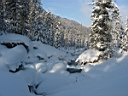 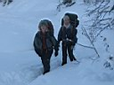 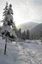 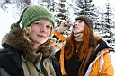 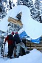 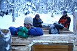 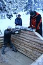 Рекорд по строительной части немного скромнее. Разобрали старую временную крышу, доделали заднюю стенку, построили переднюю стенку каркасом, положили коньковый брус. Потом опять сделали временную крышу, но уже с утеплителем. Попутно была подправлена и утеплена дверь, а также подшкурены бревна внутри сруба. Вечерняя программа, кроме традиционного ужина при свечах, была дополнена культурно-неформальным российско-американским общением под самогон с огурчиками и под водочку с омулем. 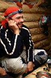 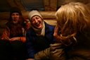 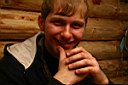 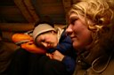 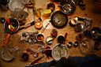 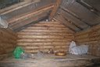 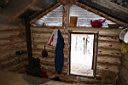 Воскресенье выдалось пасмурным и выходным днем. Гвозди не подвезли, поэтому занимались заготовкой плашек на крышу и ошкуркой бревен. Заморские гости прогулялись с гидами до кунга, посмотреть палаточные поселения и катальные склоны. Людей в эти выходные было очень много, сказывается отсутствие снега в Байкальске и его большое количество здесь, на Мамае. Да и к вечеру еще снег повалил, хороший такой снежище. Ноябрь 2007 . Ходили на три дня Лёха, Катя, Марина, Таня и я с Андршкой. Точнее Марина и Таня - на два дня. В компании других сноубордистов, приехавших на электричке, двинули по свежему снегу. Ночью заходила большая компания, приехавшая на маршрутке, но снежный буран свое дело сделал, поэтому Лёха и Макс Сушко отважно тропили тропу :) 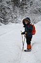 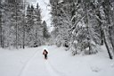 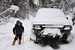 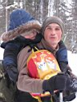 В связи с поздним заходом кататься никто не пошел и крупные работы отложили на завтра. Занялись "косметической" отделкой внутренних стен :) Вечером сели ужинать и гости пришли - Костя Шишкин, Сигал, Леха Чурилов, Дима Новиков, Макс, Женя и еще два товарища, простите не помню имен. Так что ужин плавно перешел в неслабую посиделку с монгольской водкой "Хараа", потом полной кружкой коньяка по кругу, а потом и гитарка оттаяла. Потом коктейль - монгольская водка с бурятским бальзамом "Амрита" пошел, тоже несколько куржек по кругу. А гитаристы Лёха и Костя разбивают в кровь пальцы об гитару, но это пофиг когда они "жгут" любимые песни, а веселые голоса подпевают до двух часов ночи, белой и лунной мамайской ночи :) Можно сказать, что отметили новоселье! Хотя стройку еще не закончили и не все друзья еще у нас были в гостях, так что думаю в ближайшее время несколько таких "новоселий" не помешают :) 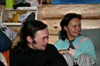 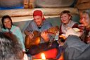 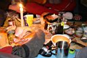 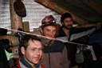 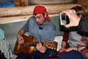 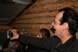 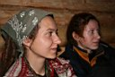 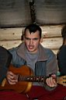 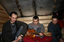 В воскресенье девченки пошли кататься, Таня впервые пробует глубокую снежную целину, Марина в роли ее инструктора, а Катя открывает свой мамайский сезон после монгольского сезона :) Я и Лёха начали утеплять крышу деревянными плахами, потом Макс Сушко подключился помогать, он решил на понедельник с нами остаться. 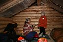 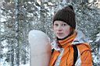 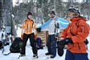 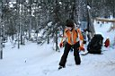 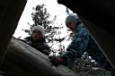 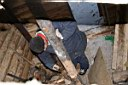 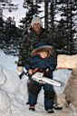 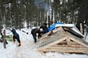 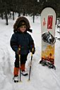 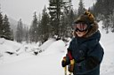 В понедельник было тепло днем, всего -1, повезло. Для сравнения, в субботу и воскресенье было -12 -10 градусов. Под утро в воскресенье в зимухе было +1, в понедельник +5, пока прохладно. Так что работы по утеплению крыши еще не закончены и требуют продолжения, чем мы и занимались в понедельник и думаю еще продолжим в декабре, не все так просто, но все возможно :)
Ноябрь 2007 . "НАША МАША" РЕМОНТ-2008 и Строительный Бум
|